Hello! Welcome to ValleyHike Nepal.Here you can see the best trails in Kathmandu Valley,have fun with friends, enjoy the greenery,and explore safely.I will guide you all the way!
ValleyHike Nepal is a simple website made to help people explore beautiful hiking trails inside kathmandu valley. You can learn about different routes, enjoy nature, and plan small advantures with friends. My aim is to make hiking easy, fun and eco-friendly for everyone who loves nature.
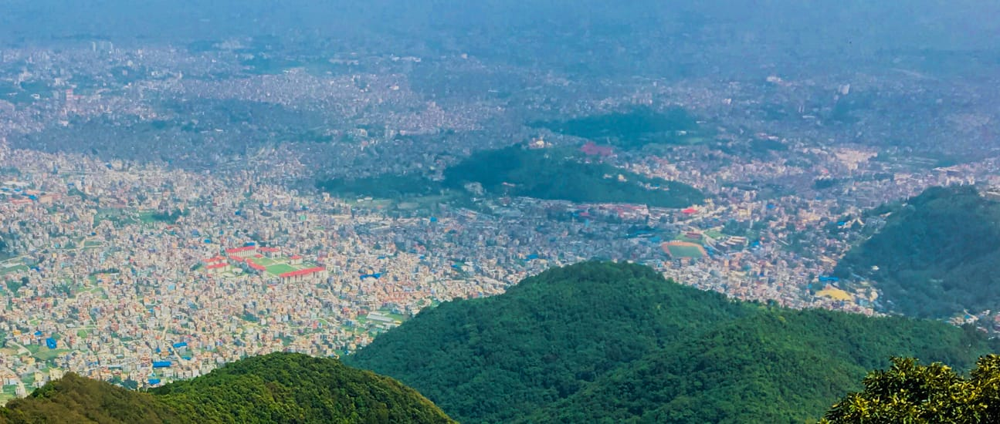
Famous for the Himalayan sunrise. Easy hike for friends and family.
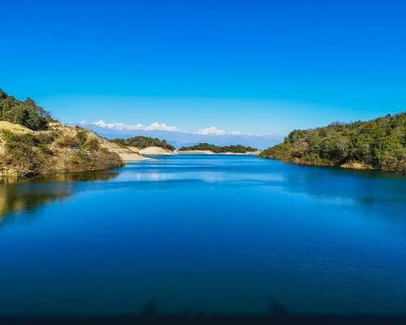
Gentle uphill trek with rivers and waterfalls. Perfect for nature lovers.
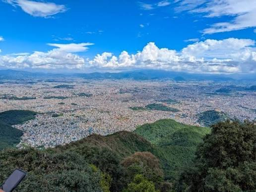
Enjoy sunrise views and peaceful forest paths. Short and refreshing hike.
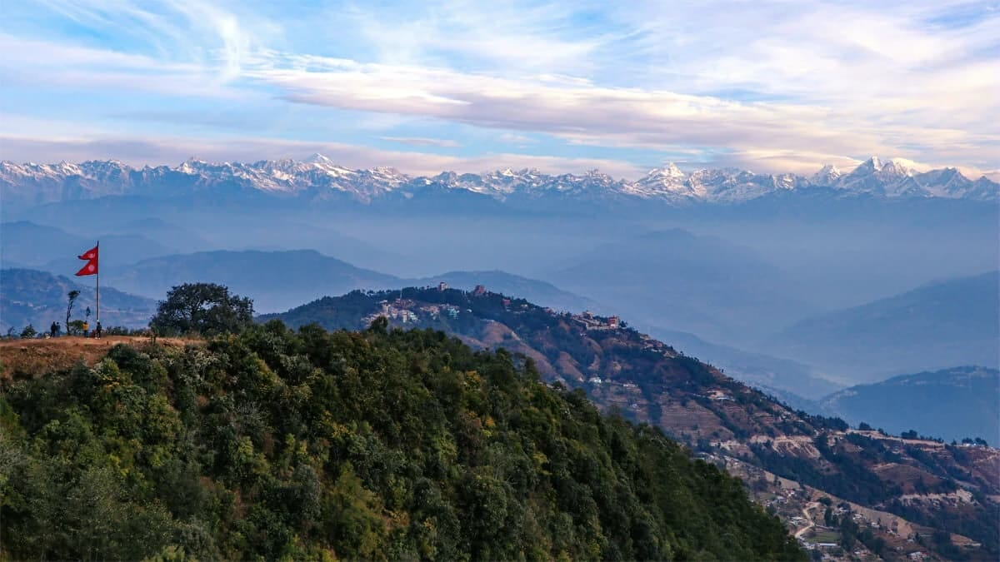
Best spot to see sunrise and sunset over the mountains. Easy and scenic hike.
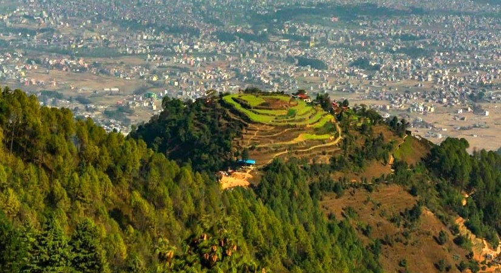
Peaceful forest trail with beautiful valley views. Short and refreshing hike suitable for all.
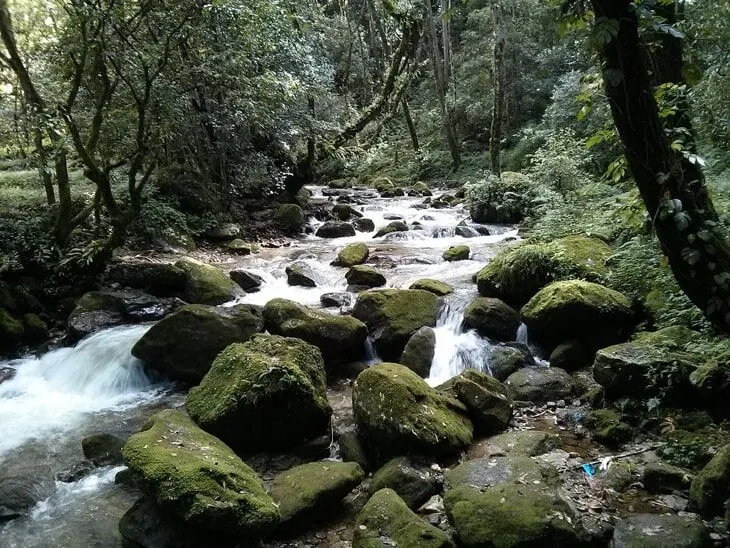
Scenic hill trail offering sunrise and sunset views. Easy and enjoyable hike for everyone.
Here you can see all the hiking places around Kathmandu Valley such as Shivapuri, Sundarijal, Champadevi, Nagarkot, Kakani, Jamacho, Phulchowki, Lakuri Bhanjyang, Bishnudwar, and Seto Gumba. Plan your route before your next adventure!
Always check the weather before you start your hike to stay safe.
Use proper hiking shoes to avoid slips and make walking comfortable.
Keep enough water with you to stay hydrated during your hike.
Follow marked trails to protect nature and avoid getting lost.
Do not pick flowers and don't distrub animals , keep the environment clean.
Hike with friends or family. It's safer and more fun!
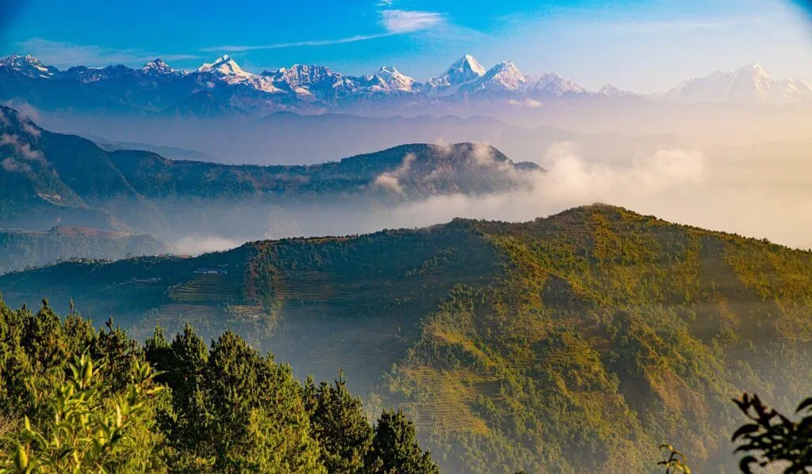
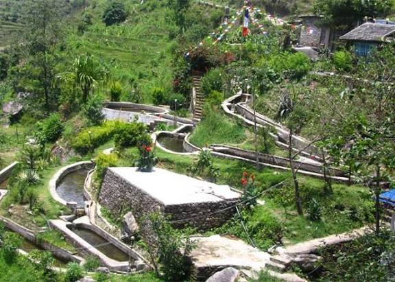
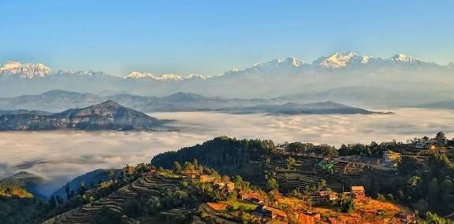
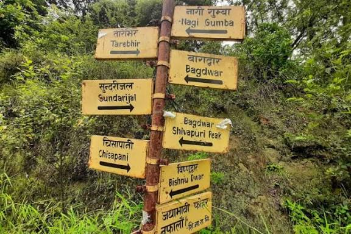
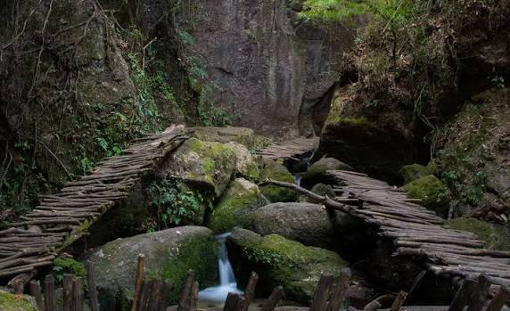
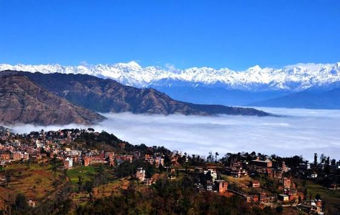
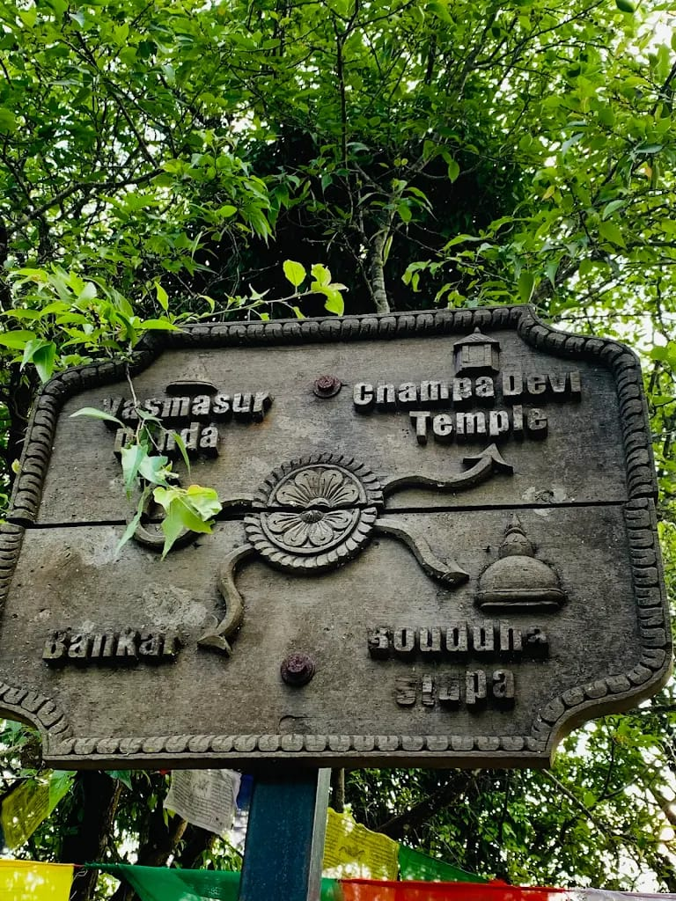
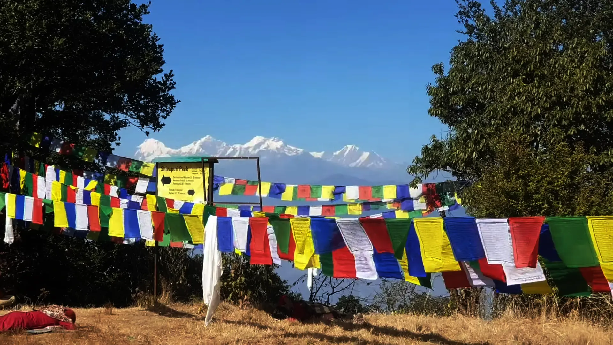
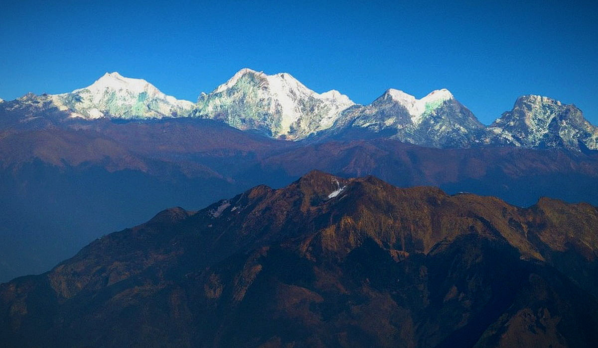
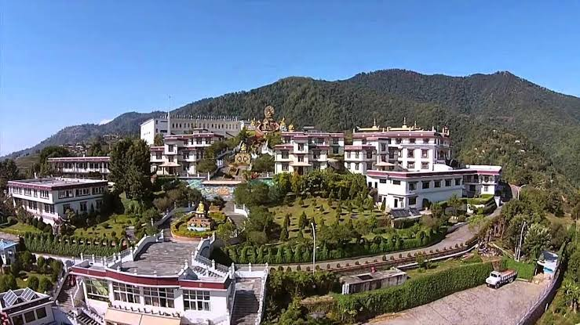
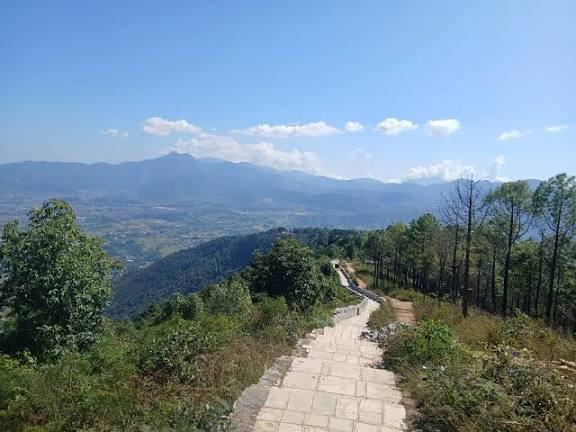
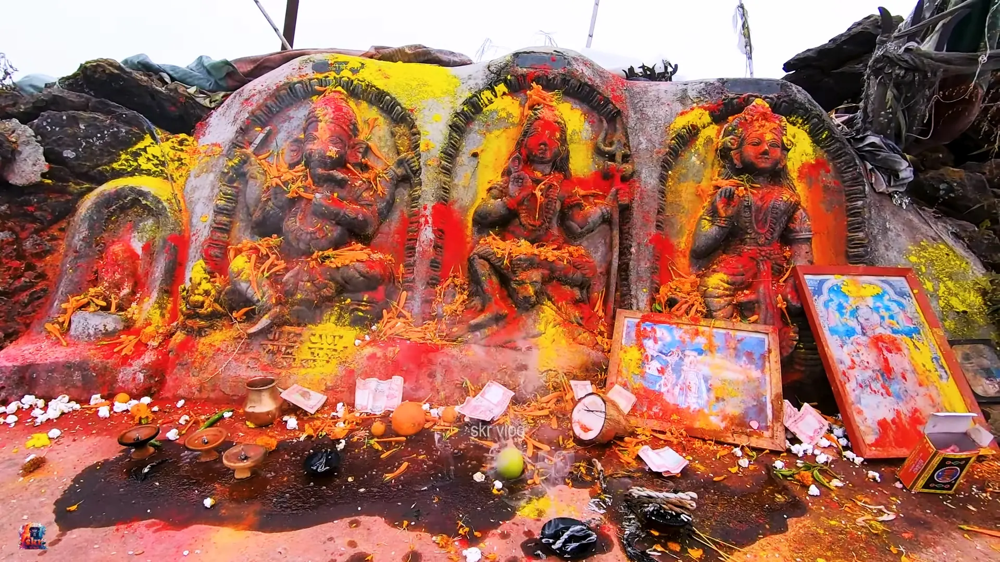
Highlights: Forest walks, birds, water streams, and peaceful nature.
Difficulty: Moderate
Hike Duration: 4-5 hours
Best Season: September to November
Shivapuri is a calm and green hike north of Kathmandu. The trail passes through forest and waterfalls with beautiful valley views. Perfect for solo nature lovers or friends who enjoy quiet hikes.
Eco Tip: Bring your own bottle and don't play loud music inside the forest.
Highlights: Waterfalls, forest paths, and small Tamang villages.
Difficulty: Moderate
Hike Duration: 5-6 hours
Best Season: October to December
This hike starts from Sundarijal and goes through Shivapuri National Park to Chisapani.You can enjoy the sound of rivers and birds. A nice one-day hike with friends or a good solo challenge.
Eco Tip: Avoid throwing plastic near water and support local tea houses.
Highlights: Rhododendron forest, birds, and the highest hill of the valley.
Difficulty: Moderate to Hard
Hike Duration: 5-6 hours
Best Season: February to May
Phulchowki lies above Godavari. It's a quiet trail surrounded by rhododendron trees and birds. The top gives an amazing view of the entire valley. Best to go with friends for safety and fun.
Eco Tip: Don't pick flowers or disturb the birds.
Highlights: Strawberry farms, pine forests, and Himalayan view.
Difficulty: Easy to Moderate
Hike Duration: 3-4 hours
Best Season: September to March
Kakani is a refreshing hike with mountain air and strawberry gardens. Families and friends love it for a picnic and easy walking trail with beautiful mountain views.
Eco Tip: Support local farmers and avoid littering near farms.
Highlights: Wide valley view, forest walk, and local villages.
Difficulty: Easy
Hike Duration: 3-5 hours
Best Season: All year round
Lakuri Bhanjyang is a beautiful and peaceful place to relax. The sunrise from the top is lovely. Perfect for a short trip with friends or a quiet solo walk.
Eco Tip: Carry your waste and avoid campfires.
Highlights: Holy spring, forest route, and local culture.
Difficulty: Easy
Hike Duration: 4-5 hours
Best Season: September to February
Bishnudwar is known as the source of the holy Bagmati River. The forest is calm and cool, ideal for meditation and solo hikes. Nearby Lele area shows village life and green hills.
Eco Tip: Keep the holy site clean and quiet.
Highlights: Stupa at the top, forest walk, and view of Kathmandu.
Difficulty: Moderate
Hike Duration: 3-4 hours
Best Season: October to February
This hike goes through Nagarjun Forest Reserve. The path is uphill but full of pine smell and birds. From the top stupa, you can see Kathmandu city. Great for solo hikers and friends alike.
Eco Tip: Stay on the path and do not feed wild animals.
Highlights: Pine forest, stupas,and monasteries.
Difficulty: Moderate
Hike Duration: 3-6 hours
Best Season: October to March
Champadevi is a popular hill in the southern part of the valley. The trail passes through Hattiban and peaceful forests. Best for group hikes and morning adventures with friends.
Eco Tip: Respect the temples and don't throw plastic near the route.
Highlights: Sunrise, sunset, and mountain views.
Difficulty: Easy to Moderate
Hike Duration: 4-5 hours
Best Season: September to December
Nagarkot is famous for sunrise and sunset views of the Himalayas. The trail from Sakhu to Nagarkot goes through pine forests. Best for group or family hikes with lovely scenery.
Eco Tip: Avoid plastic bottles and use dustbins in local hotels.
Highlights: Peaceful monastery, Buddha statues, and valley view.
Difficulty: Easy
Hike Duration: 2-3 hours
Best Season: All year round
Seto Gumba is a short and peaceful hike located in the Nagarjun area. The walk is easy and full of positive vibes. You can visit the monastery and enjoy the calm environment. Great for solo visits or small groups.
Eco Tip: Dress modestly and keep the monastery area clean and silent.
If you have any questions, suggestions, or want hiking guidance, feel free to contact us. We are happy to hear from you!